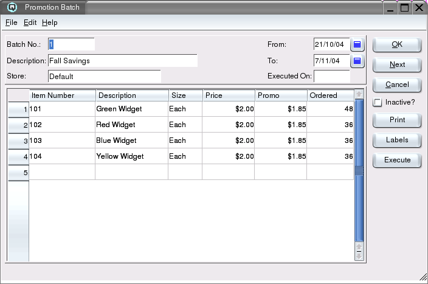

| Table of Contents | Quasar Commands | Up: Inventory | Previous: Promo Batch List | Next: Sales History |
The promotional selling prices for multiple items can be set using this screen. Prices will take effect during the promotion start and stop dates inclusive. A promotion batch will not be in effect until the batch is "Executed". When a promotion batch is executed Quasar creates a price record for each item in the batch. Individual items can then be edited using the Quasar Price Master screen. You "CANNOT" edit items within and executed promotion batch itself.
An exciting feature of Quasar is that you can enter the selling quantity that
you have purchased for the promotion. During the promotion you can run a
promotion activity report to see the on hand status of your promotion stock.

The batch number for the batch. If no data is entered Quasar will default to the next available batch number.
The description of the promotion batch.
The store in which the promotion will be in effect.
The start date of the promotion. Promotions are valid as/at the start date until the end date inclusive.
The end date of the promotion. Promotions are valid as/at the start date until the to date inclusive.
The date that you executed the promotion batch. Note: If you do not execute the batch, the prices will not take effect.
Click on the print button to print a copy of your promotion pricing.
Click on the labels button to print shelf labels for all of the items in the promotion batch.
Click on the execute button to execute the batch. Executing the batch creates a price record for each item in the batch. Individual items can be viewed or edited using the price master screen. The promotion pricing does not take effect until the batch is executed and the current date is within the start and stop dates defined in the batch.
| Table of Contents | Quasar Commands | Up: Inventory | Previous: Promo Batch List | Next: Sales History |